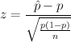

Statistics > Hypothesis Tests > 1-Population Proportion
This utility performs calculations for testing claims about a population
proportion. A normal distribution is used to approximate
the binomial distribution. The null hypothesis of a claim about a
population proportion p is p = p0. The alternative
hypothesis can be one of the following: p < p0,
p > p0, or p ≠ p0.
The test statistic is computed using the following formula:

where is the sample proportion, p
is the hypothesized population proportion,
and n is the sample size.
To use the utility, follow these steps:
- If individual samples are entered in a single column of the
Datasheet, select the Samples in column: radio button, and
select the column name in the drop-down menu.
- To use summary statistics of the sample data, select the
Summarized sample data: radio button, and input the number
of events and the number of trials in the provided text fields.
- Enter the significance or confidence level (between 0 and 1).
- Select the form of the alternative hypothesis in the
Alternative Hypothesis: drop-down menu. Enter the
hypothesized population proportion in the provided text box.
- Click the OK button to perform the computation. The
results will be displayed in the log window.
Sample Outputs
The null hypothesis and the alternative hypothesis are displayed.
The results, along with the input parameters, are displayed in a table.
[N = sample size; Sample Proportion = calculated from the individual samples
or provided directly by the user;
Significance Level = 1 - confidence level; Critical Value =
critical value corresponding to the significance level;
Test Statistic = test statistic corresponding to the hypothesized proportion;
p-Value = p-Value corresponding to the test statistic]
Hypothesis Test - One population proportion: confidence level = 0.95
Input: Summary data
Null hypothesis: p = 0.1
Alternative hypothesis: p > 0.1
| N |
Sample Proportion |
Significance Level |
Critical Value |
Test Statistic |
p-Value |
| 100 |
0.200 |
0.05 |
1.645 |
3.333 |
0.0004 |